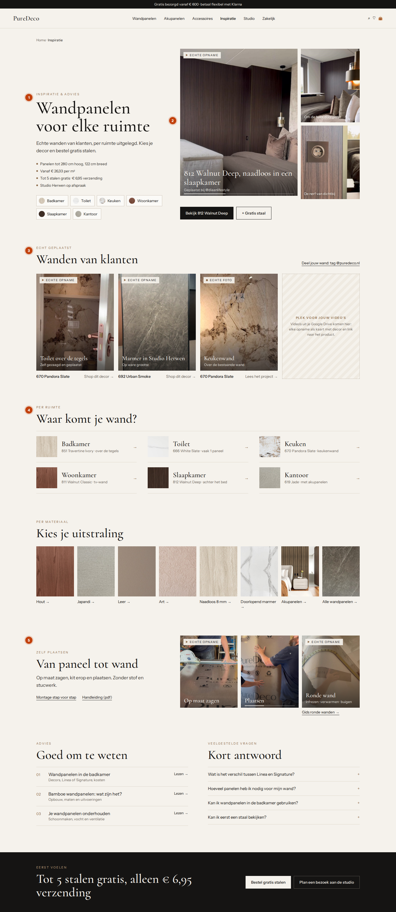

PureDeco · Inspiratie v3 · H1-kopie · voorstel
De hero wordt een filmstrip: de hoofdvideo met de twee stappen ernaast. De feiten en ruimte-chips staan naast de H1. Daaronder een raster met vier echte wanden; vak 4 is voor je Google Drive-video's.
